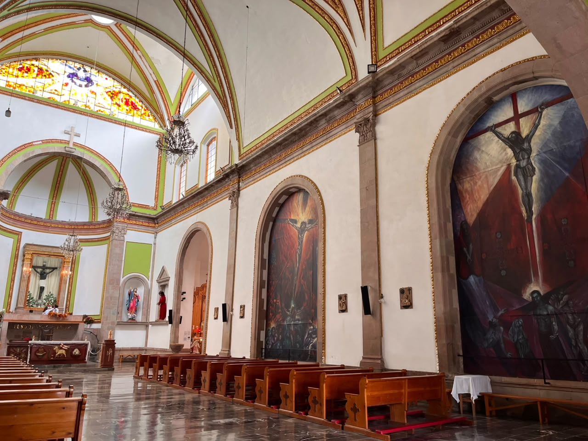
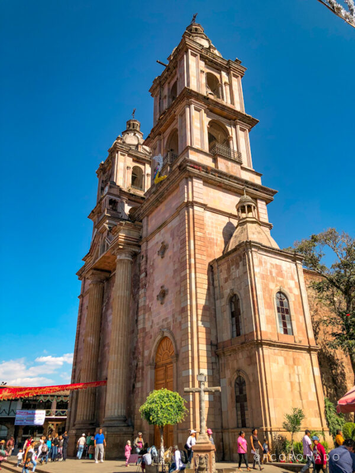
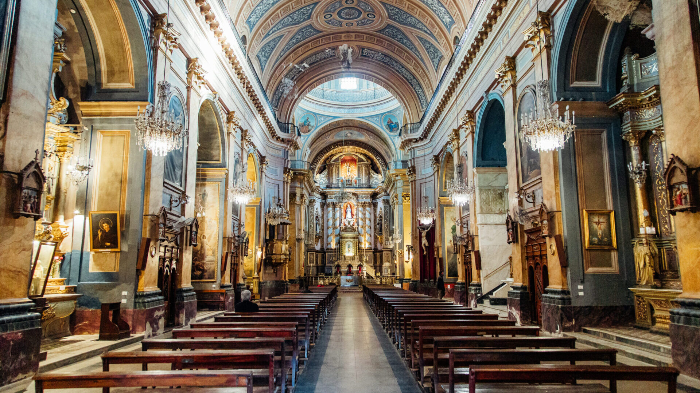
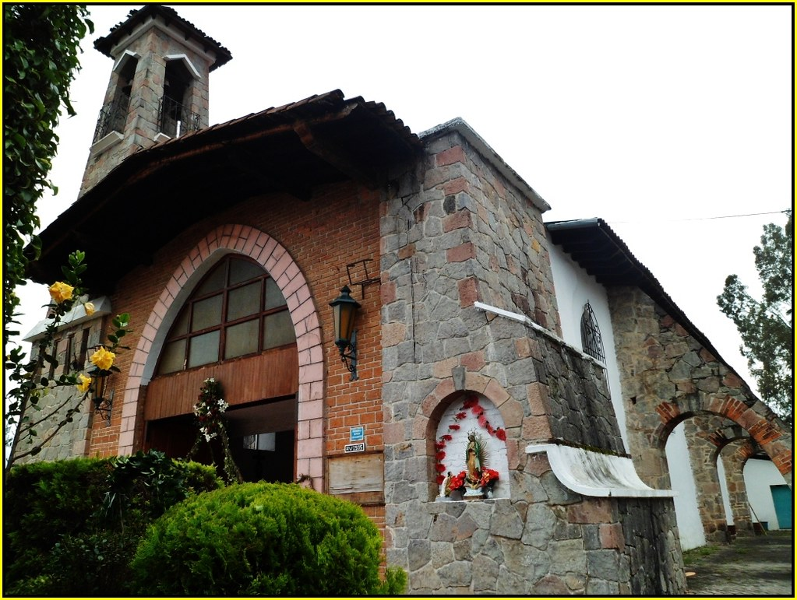
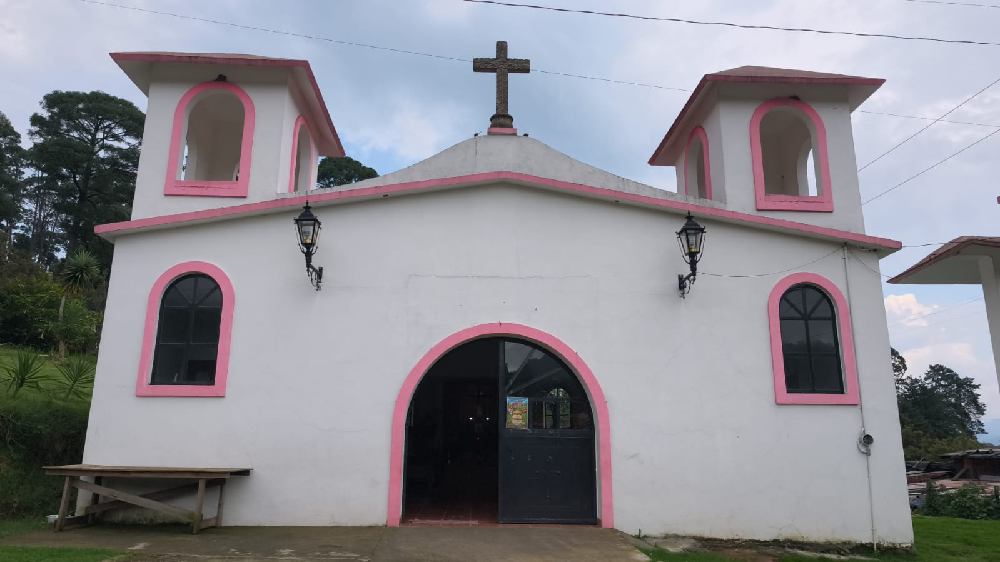
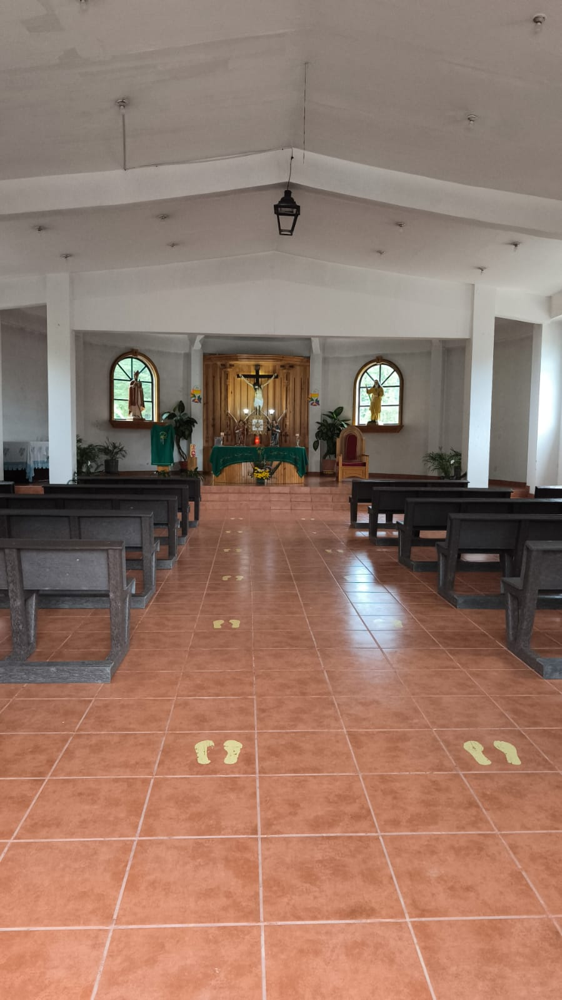

Santa María Ahuacatlán
La Iglesia o Santuario del Señor de Santa María Ahuacatlán es un punto espiritual central en Valle de Bravo, conocido por albergar la venerada imagen del Cristo Negro, una figura milagrosa según la tradición local Volviendo a la Biblia Está ubicado en el Barrio de Santa María, Valle de Bravo
Festividades

✨ La leyenda del Cristo Negro
La imagen es célebre por su historia milagrosa:

Parroquia Santa María de Asis
La Parroquia de San Francisco de Asís se encuentra en la Manzana 011 de la calle 5 de Febrero, en el centro de Valle de Bravo, México. Esta iglesia destaca por su hermosa y majestuosa arquitectura neoclásica, tanto en su exterior como en su interior. Es un lugar ideal para disfrutar de momentos llenos de encanto, paz y buena energía para el alma. Sentarse en silencio en su interior o simplemente observarla, tiene el poder de renovar el espíritu. Construida en 1880, esta bella iglesia se encuentra en pleno centro de Valle de Bravo y es un atractivo turístico imperdible.

Situada a poco más de 20 minutos a pie del Andaro Plaza Avandaro, la Villa San Francisco Valle de Bravo, de 50 m², ofrece acceso a numerosos lugares de interés turístico de la zona. Esta villa aloja hasta 8 huéspedes y les cuenta con un aparcamiento.

Iglesia Virgen de Guadalupe
Ubicada en la Calle Independencia, en el centro de Valle de Bravo, la Capilla de Guadalupe se erige como un punto de referencia espiritual y cultural de gran importancia para la comunidad local y visitantes. Considerada uno de los sitios más antiguos del pueblo, esta capilla no es solo un lugar para el culto, sino también un centro de tradiciones arraigadas que definen la identidad de este Pueblo Mágico. Su valoración general es positiva, destacando por su belleza arquitectónica y el ambiente de paz que ofrece a quienes la visitan.

Capilla de La Huerta San Agustín
La Iglesia de La Huerta, ubicada en la comunidad de La Huerta San Agustín, en el Estado de México, se erige como el principal punto de referencia espiritual y social para sus residentes. Aunque no ostenta la grandiosidad arquitectónica de las grandes catedrales, su valor reside en su función como centro de fe y cohesión comunitaria. Su estatus operacional confirma que es un lugar de culto activo, donde la vida parroquial sigue siendo un pilar para los habitantes de la zona.
